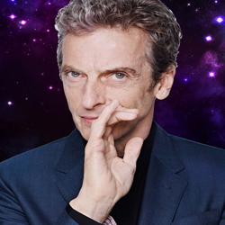

| Home | The Doctors | The Companions | The Villains |
|
|||
| cf
The Twelth Doctor The Eleventh Doctor had grown old on Trenzalore and as the Dalek armies gathered to see him finally defeated, Clara persuaded the Time Lords to grant him a new regeneration cycle. After destroying his old enemies he reached the TARDIS, phoned the future and completed his regeneration.He’s a new man! Clara could scarcely believe that the Twelfth Doctor was the same Time Lord who had introduced her to so many adventures throughout time and space. The genial nature was gone and in its place she found a sharp, impatient and at times insensitive soul who was quick to criticize. ‘Look at you!’ he once shouted at his friends as they struggled to follow his lightning-fast thought process, ‘Why can't I meet a decent species?’ he added, calling Earth, ‘Planet of the pudding brains…’ He’s equally rude to his opponents, facing a hoard of deadly droids and greeting them with a nonchalant, ‘Hello, hello, rubbish robots from the dawn of time…' I’m the Doctor. I’ve lived for over two thousand years, and not all of them were good…The Doctor The Twelfth Doctor may not be big on hugs but he’s still brave, heroic and drawn to danger… But there is a dark side. When Clara light-heartedly called herself his carer he agreed with his companion, adding ‘She cares so I don’t have to…’Yet so much of the ‘old Doctors’ remains intact… He’s still funny and able to make jokes in the direst situations. Wandering around Victorian London in a post-regeneration state of befuddlement he couldn’t believe his new face. ‘I mean it’s alright up to the eyebrows,’ he told a random stranger. ‘Then it just goes haywire! Look at the eyebrows! These are attack eyebrows. You could take bottle caps off with these!’ And talking of his face, what secret does it hold? ‘Why did I choose this face?’ he once mused. ‘It’s like I'm trying to tell myself something…’And there’s another secret connected to the Twelfth Doctor… It’s the woman who has taken an interest in him from afar. She calls him her boyfriend and has ties with the Time Lord that seem to stretch back years… Perhaps we’ll find out more about Missy as we get to know the amazing Twelfth Doctor!
|